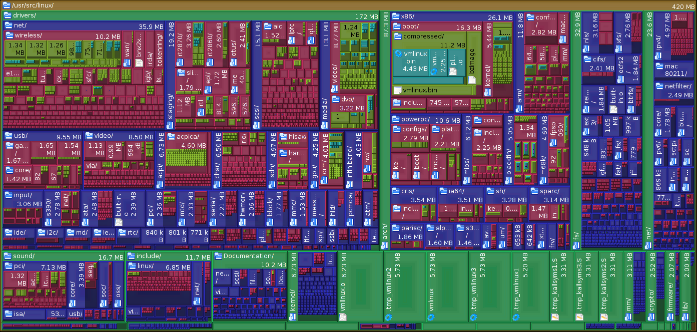
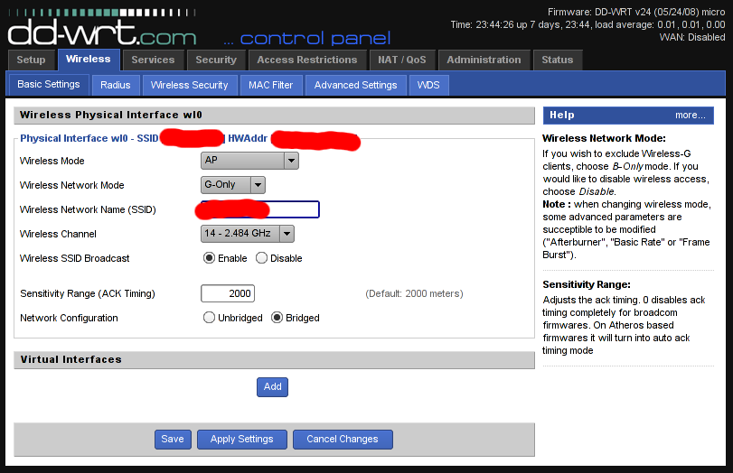

Kernel Linux 2.6.29 para Dell Inspiron 9300 con Gentoo Linux
El Kernel Linux versión 2.6.29 fue liberado por Linus Torvalds en marzo de 2009. Entre muchas novedades, otorga un soporte inicial del nuevo sistema de archivos Btrfs.
17 June 2009
El Kernel Linux versión 2.6.29 fue liberado por Linus Torvalds en marzo de 2009. Entre muchas novedades, otorga un soporte inicial del nuevo sistema de archivos Btrfs. Cuando el Btrfs sea considerado como estable se espera que sustituya por completo al Ext.
Tux, la mascota de Linux, se ha tomado tres meses sábaticos. La mascota de la versión 2.6.29 es Tuz. Tuz es un Demonio de Tazmania con un antifaz en forma de pico.
La razón de esta nueva imagen es promover las labores de conservación de esta especie. Su población ha disminuido significativamente por un tumor facial, enfermedad mortal para estos animales. Más información en Save The Tasmanian Devil.
Regresando al software libre, hace un par de semanas esta versión del Linux (en concreto gentoo-sources-2.6.29-r5) fue marcada como estable en el portage de Gentoo Linux. A continuación describo la configuración y compilación de este kernel para la portátil Dell Inspiron 9300...
Descarga
Como es habitual para Gentoo Linux, actualizamos primero el portage.
# emerge --sync
Ejecutamos emerge con el parámetro "p" que nos dirá la versión que pretendería instalar de gentoo-sources.
# emerge -pu gentoo-sources
Si estamos de acuerdo, instalamos el código fuente del kernel.
# emerge -u gentoo-sources
Encontraremos el código fuente en el directorio /usr/src
# ls -l /usr/src/
lrwxrwxrwx 1 root root 22 jun 11 20:19 linux -> linux-2.6.29-gentoo-r5
drwxr-xr-x 22 root root 4096 jun 11 20:19 linux-2.6.29-gentoo-r5
Haga el enlace "linux" al "linux-2.6.29-gentoo-r5" manualmente si no lo tiene.
Nos cambiamos al directorio de las nuevas fuentes del kernel.
# cd /usr/src/linux
Esta es una representación gráfica del tamaño de los archivos contenidos en /usr/src/linux-2.6.29-gentoo-r5

Hackear el controlador ipw2200
Por defecto, la tarjeta inalámbrica Intel ipw2200 me permite usar 11 canales. Es posible cambiar este parámetro a 14 canales.
Con este cambio y con un punto de acceso en el canal 14 podrá establecer una comunicación fuera del rango de los equipos nacionales. En pocas palabras, una capa más de seguridad. Por ejemplo, un LinkSys WRT54G con DD-WRT me permite usar el canal 14:

Hay dos formas de cambiar este parámetro a 14: alterando el EEPROM de la tarjeta inalábrica o cambiando el código fuente del controlador de la tarjeta antes de compilar el kernel. Le mostraré la segunda opción.
Por medio del editor vim cargue el código fuente del controlador.
# vim drivers/net/wireless/ipw2x00/ipw2200.c
Busque el texto EEPROM_COUNTRY_CODE. Para ello teclee "/", la cadena a buscar EEPROM_COUNTRY_CODE y presione ENTER.
/EEPROM_COUNTRY_CODE
Lo anterior nos llevará a la línea del código del controlador que toma el valor de la locación geográfica fijada en la fábrica.
Observe el siguiente fragmento donde la línea con "-" es la original y la línea con "+" es la cambiada. Presione "i" para editar el texto y efectúe el cambio a "ZZR".
for (j = 0; j < ARRAY_SIZE(ipw_geos); j++) {
- if (!memcmp(&priv->eeprom[EEPROM_COUNTRY_CODE],
+ if (!memcmp("ZZR",
ipw_geos[j].name, 3))
break;
}
Para terminar de editar, presione ESC para salir del modo de edición. Luego, para guardar y salir teclee dos puntos, "w", "q" y ENTER.
La región "ZZR" nos permite los 14 canales en redes 802.11bg. En el archivo README del controlador se encuentra la siguiente tabla sobre las regiones y canales que utilizan:
Supported channels
Code Geography 802.11bg 802.11a
--- Restricted 11 0
ZZF Custom US/Canada 11 8
ZZD Rest of World 13 0
ZZA Custom USA & Europe & High 11 13
ZZB Custom NA & Europe 11 13
ZZC Custom Japan 11 4
ZZM Custom 11 0
ZZE Europe 13 19
ZZJ Custom Japan 14 4
ZZR Rest of World 14 0
ZZH High Band 13 4
ZZG Custom Europe 13 4
ZZK Europe 13 24
ZZL Europe 11 13
Configurar el kernel
Para configurar el kernel Linux usando la interfaz ncurses y estando en el directorio del kernel mismo ejecute el siguiente comando.
# make menuconfig
A partir de aquí estamos trabajando en la configuración, habilitando y deshabilitando opciones.
La portátil Dell Inspiron 9300 tiene un procesador Intel Pentium-M, así que deshabilito el soporte multi-procesador y selecciono "Pentium M" como la familia del procesador. Note también que he habilitado como módulo a "Dell laptop support" que me permite monitorear la temperatura y controlar la velocidad de los ventiladores.
Processor type and features
[ ] Symmetric multi-processing support
Processor family (Pentium M)
<M> Dell laptop support
Habilito las características de ahorro de energía y de variación de la frecuencia del procesador.
Power management and ACPI options
CPU Frequency scaling
[*] CPU Frequency scaling
[*] Enable CPUfreq debugging
<*> CPU frequency translation statistics
[*] CPU frequency translation statistics details
Default CPUFreq governor (ondemand)
-*- 'performance' governor
<*> 'powersave' governor
<*> 'userspace' governor for userspace frequency scaling
-*- 'ondemand' cpufreq policy governor
<*> 'conservative' cpufreq governor
*** CPUFreq processor drivers ***
<*> ACPI Processor P-States driver
Esta portátil tiene una ranura PCMCIA con la cual conecto una segunda tarjeta inalámbrica con chip Atheros.
Bus options (PCI etc.)
<M> PCCard (PCMCIA/CardBus) support
<M> 16-bit PCMCIA support
[*] Load CIS updates from userspace (EXPERIMENTAL)
[*] PCMCIA control ioctl (obsolete)
-*- 32-bit CardBus support
*** PC-card bridges ***
<M> CardBus yenta-compatible bridge support
Deshabilito el soporte para IPv6 ya que en la práctica no he tenido necesidad de usarlo. Habilito las opciones para IP Tables que me permiten configurar un muro de fuego.
Networking support --->
< > The IPv6 protocol
[*] Network packet filtering framework (Netfilter) --->
[ ] Advanced netfilter configuration
Core Netfilter Configuration --->
-*- Netfilter LOG over NFNETLINK interface
<*> Netfilter connection tracking support
[*] Connection tracking security mark support
<*> FTP protocol support
<*> IRC protocol support
<*> SIP protocol support
<*> Connection tracking netlink interface
-*- Netfilter Xtables support (required for ip_tables)
<*> "CONNSECMARK" target support
<*> "MARK" target support
<*> "NFLOG" target support
<*> "SECMARK" target support
<*> "TCPMSS" target support
<*> "conntrack" connection tracking match support
<*> "mark" match support
<*> "state" match support
IP: Netfilter Configuration --->
<*> IPv4 connection tracking support (required for NAT)
[*] proc/sysctl compatibility with old connection tracking
<*> IP tables support (required for filtering/masq/NAT)
<*> Packet filtering
<*> REJECT target support
<*> LOG target support
<*> ULOG target support
<*> Full NAT
<*> MASQUERADE target support
<*> Packet mangling
Tengo una llave bluetooth que conecto por USB.
Networking support --->
--- Bluetooth subsystem support
<M> L2CAP protocol support
<M> SCO links support
<M> RFCOMM protocol support
[*] RFCOMM TTY support
<M> BNEP protocol support
[*] Multicast filter support
[*] Protocol filter support
<M> HIDP protocol support
Bluetooth device drivers --->
<M> HCI USB driver
Tanto el disco duro como el lector de DVD funcionan bajo SATA. Opciones que habilito.
Device Drivers --->
<*> Serial ATA (prod) and Parallel ATA (experimental) drivers --->
[*] ATA ACPI Support
[*] SATA Port Multiplier support
<*> AHCI SATA support
[*] ATA SFF support
<*> Intel ESB, ICH, PIIX3, PIIX4 PATA/SATA support
Habilito mis dispositivos de red: la alámbrica (Broadcom 440x/47xx), la inalámbrica (Intel PRO/Wireless 2200BG) y la inalámbrica PCMCIA (Atheros 5xxx).
Device Drivers --->
[*] Network device support --->
[*] Ethernet (10 or 100Mbit) --->
<*> Broadcom 440x/47xx ethernet support
Wireless LAN --->
[*] Wireless LAN (IEEE 802.11)
<M> Atheros 5xxx wireless cards support
<M> Intel PRO/Wireless 2200BG and 2915ABG Network Connection
[*] Enable promiscuous mode
-*- Enable radiotap format 802.11 raw packet support
[*] Enable creation of a RF radiotap promiscuous interface
[*] Enable QoS support
Dentro de "Input device support" se encuentra "User level driver support" un módulo que me permite usar el Wiimote.
Device Drivers --->
Input device support --->
-*- Generic input layer (needed for keyboard, mouse, ...)
-*- Support for memoryless force-feedback devices
<*> Polled input device skeleton
-*- Mouse interface
<M> Joystick interface
<*> Event interface
-*- Keyboards --->
[*] Mice --->
[*] Joysticks/Gamepads --->
[ ] Tablets --->
[ ] Touchscreens --->
[*] Miscellaneous devices --->
<M> User level driver support
Habilito el soporte I2C para el chip Intel 82801 presente en la Dell Inspiron 9300.
Device Drivers --->
-*- I2C support --->
<*> I2C device interface
[*] Autoselect pertinent helper modules
I2C Hardware Bus support --->
<*> Intel 82801 (ICH)
Mi portátil tiene una tarjeta de video ATI Radeon Mobility X300 (M22) la cual no es de alto desempeño gráfico. Me ha satisfecho el controlador libre, mismo que se configura en el kernel.
Device Drivers --->
Graphics support --->
<*> /dev/agpgart (AGP Support) --->
<*> ATI chipset support
<*> Direct Rendering Manager (XFree86 4.1.0 and higher DRI support)
<*> ATI Radeon
[*] Backlight & LCD device support --->
<*> Lowlevel Backlight controls
<*> Generic (aka Sharp Corgi) Backlight Driver
El dispositivo de sonido de esta portátil es Intel AC97.
Device Drivers --->
<*> Sound card support --->
<M> Advanced Linux Sound Architecture --->
<M> Sequencer support
<M> Sequencer dummy client
<M> OSS Mixer API
<M> OSS PCM (digital audio) API
[*] OSS PCM (digital audio) API - Include plugin system
[*] OSS Sequencer API
[*] Dynamic device file minor numbers
[*] Support old ALSA API
[*] Verbose procfs contents
[*] Generic sound devices --->
[*] AC97 Power-Saving Mode
(0) Default time-out for AC97 power-save mode
[*] PCI sound devices --->
<M> Intel/SiS/nVidia/AMD/ALi AC97 Controller
Es indispensable el soporte USB. Una opción que recomiendo activar es "USB selective suspend/resume and wakeup" que permite al equipo portátil ahorrar energía en lo que a dispositivos USB se refiere.
Device Drivers --->
[*] USB support --->
<*> Support for Host-side USB
[*] USB verbose debug messages
[*] USB announce new devices
[*] USB device filesystem
[*] USB selective suspend/resume and wakeup
<*> USB Monitor
<*> EHCI HCD (USB 2.0) support
<*> OHCI HCD support
<*> UHCI HCD (most Intel and VIA) support
<M> USB Modem (CDC ACM) support
<*> USB Printer support
<*> USB Mass Storage support
[*] The shared table of common (or usual) storage devices
Habilito el controlador del lector de tarjetas SD.
Device Drivers --->
<M> MMC/SD/SDIO card support --->
<M> MMC block device driver
[*] Use bounce buffer for simple hosts
<M> Secure Digital Host Controller Interface support
<M> SDHCI support on PCI bus
<M> Ricoh MMC Controller Disabler (EXPERIMENTAL)
Luego de haber habilitado los dispositivos de red, regreso a habilitar las opciones de "Wireless" en "Networking support".
[*] Networking support --->
[*] Wireless --->
{M} Improved wireless configuration API
[ ] cfg80211 regulatory debugging
[*] nl80211 new netlink interface support
[*] Old wireless static regulatory definitions
-*- Wireless extensions
[*] Wireless extensions sysfs files
{M} Common routines for IEEE802.11 drivers
[ ] lib80211 debugging messages
<M> Generic IEEE 802.11 Networking Stack (mac80211)
[*] Enable mac80211 mesh networking (pre-802.11s) support
-*- Enable LED triggers
[ ] Export mac80211 internals in DebugFS
La sección "File systems" es sumamente importante. Sencillamente, si se intenta cargar un GNU/Linux desde una partición con un sistema de archivos no soportado, nos ocasionaría un kernel panic. Note que aquí aparece el nuevo sistema de archivos Btrfs.
File systems --->
<*> Second extended fs support
<*> Ext3 journalling file system support
<*> Reiserfs support
< > Btrfs filesystem (EXPERIMENTAL) Unstable disk format
[*] Dnotify support
[*] Inotify file change notification support
[*] Inotify support for userspace
[*] Quota support
[*] Report quota messages through netlink interface
<*> Quota format v2 support
<*> Kernel automounter version 4 support (also supports v3)
CD-ROM/DVD Filesystems --->
<*> ISO 9660 CDROM file system support
[*] Microsoft Joliet CDROM extensions
[*] Transparent decompression extension
DOS/FAT/NT Filesystems --->
<*> MSDOS fs support
<*> VFAT (Windows-95) fs support
Pseudo filesystems --->
-*- /proc file system support
[*] /proc/kcore support
[*] /proc/vmcore support (EXPERIMENTAL)
[*] Virtual memory file system support (former shm fs)
[*] Tmpfs POSIX Access Control Lists
[*] HugeTLB file system support
[*] Network File Systems --->
<*> CIFS support (advanced network filesystem, SMBFS successor)
Partition Types --->
[ ] Advanced partition selection
-*- Native language support --->
(utf8) Default NLS Option
<*> Codepage 437 (United States, Canada)
<*> ASCII (United States)
<*> NLS ISO 8859-1 (Latin 1; Western European Languages)
<*> NLS UTF-8
Es necesario habilitar las siguientes opciones para usar redes WiFi cifradas como WEP y WPA.
-*- Cryptographic API --->
*** Crypto core or helper ***
-*- Cryptographic algorithm manager
<*> Authenc support
*** Block modes ***
<*> CBC support
{*} ECB support
*** Hash modes ***
<*> HMAC support
-*- MD5 digest algorithm
{M} Michael MIC keyed digest algorithm
<*> SHA1 digest algorithm
*** Ciphers ***
-*- AES cipher algorithms
<*> AES cipher algorithms (i586)
{*} ARC4 cipher algorithm
<*> DES and Triple DES EDE cipher algorithms
*** Random Number Generation ***
[ ] Hardware crypto devices --->
Para terminar, vaya a la pantalla inicial de la configuración y elija Exit.
Le preguntará Do you wish to save your new kernel configuration? a lo que debemos responder YES de lo contrario perderemos todos los cambios hechos.
Compilar
De vuelta en la terminal, ejecutamos make para compilar.
# make
Instalar
El siguiente paso en instalar los módulos. Si hubiera una instalación de esta misma verisón del kernel hay que eliminar los módulos anteriores antes de instalar los nuevos.
# rm -rf /lib/modules/2.6.29-gentoo-r5
# make modules_install
Como tengo una partición para el arranque, la monto y elimino los archivos de alguna instalación anterior de esta misma versión del kernel.
# mount /boot
# rm /boot/config
# rm /boot/config-2.6.29-gentoo-r5
# rm /boot/System.map
# rm /boot/System.map-2.6.29-gentoo-r5
# rm /boot/vmlinuz
# rm /boot/vmlinuz-2.6.29-gentoo-r5
Ejecuto make install para que me copie vmlinuz, System.map y config a /boot
# make install
Edito la configuración del gestor de arranque Grub para tener la opción de este nuevo kernel.
# nano /boot/grub/grub.conf
Mi archivo grub.conf es así...
#
# /boot/grub/grub.conf
#
default 0
timeout 3
splashimage=(hd0,0)/boot/grub/splash.xpm.gz
title Gentoo Linux - KDE 3.5.9 - 2.6.29-r5 NUEVO
root (hd0,0)
kernel /vmlinuz-2.6.29-gentoo-r5 root=/dev/sda7 resume=/dev/sda5
Puede necesitar cargar algunos módulos cada vez que arranque el equipo. Eso se configura en el archivo /etc/modules.autoload.d/kernel-2.6
# nano /etc/modules.autoload.d/kernel-2.6
En /etc/modules.autoload.d/kernel-2.6 tengo:
# Dell Inspiron, monitor temperatura y ventiladores
i8k
# Tarjeta PCMCIA
yenta_socket
# Lector de tarjetas SD
mmc_core
ricoh_mmc
# Red inalámbrica Intel IPW2200
ipw2200
# WiiMote
uinput
La configuración de la tarjeta de sonido reside en el archivo /etc/modprobe.d/alsa
# nano /etc/modprobe.d/alsa
Y lo tengo con este contenido apropiado para la Intel AC97...
#
# /etc/modprobe.d/alsa
#
# ALSA portion
alias char-major-116 snd
# OSS/Free portion
alias char-major-14 soundcore
#
# Intel AC97
#
# ALSA portion
alias snd-card-0 snd-intel8x0
# OSS/Free portion
alias sound-slot-0 snd-card-0
# OSS/Free portion - card #1
alias sound-service-0-0 snd-mixer-oss
alias sound-service-0-1 snd-seq-oss
alias sound-service-0-3 snd-pcm-oss
alias sound-service-0-8 snd-seq-oss
alias sound-service-0-12 snd-pcm-oss
alias /dev/mixer snd-mixer-oss
alias /dev/dsp snd-pcm-oss
alias /dev/midi snd-seq-oss
# Set this to the correct number of cards.
options snd cards_limit=1
Después de modificar estos archivos refresque los módulos a cargar con update-modules.
# update-modules
Reinicie el equipo y pruebe su kernel 2.6.29.
Revisión del controlador ipw2200 hackeado
Para revisar la carga del controlador de la tarjeta inalámbrica ipw2200 ejecute...
$ dmesg | grep ipw
Si aparece "Detected geography ZZR (14 802.11bg channels, 0 802.11a channels)" tendrá su controlador hackeado.
$ dmesg | grep ipw
[ 4.641026] ipw2200: Intel(R) PRO/Wireless 2200/2915 Network Driver, 1.2.2kmprq
[ 4.641029] ipw2200: Copyright(c) 2003-2006 Intel Corporation
[ 4.641090] ipw2200 0000:03:03.0: PCI INT A -> GSI 17 (level, low) -> IRQ 17
[ 4.663652] ipw2200: Detected Intel PRO/Wireless 2200BG Network Connection
[ 4.663693] eth1 (ipw2200): not using net_device_ops yet
[ 4.663697] ipw2200 0000:03:03.0: firmware: requesting ipw2200-bss.fw
[ 5.121085] ipw2200: Detected geography ZZR (14 802.11bg channels, 0 802.11a channels)
Otra forma de comprobar esto es ejecutando iwlist dispositivo channel:
# iwlist eth1 channel
eth1 14 channels in total; available frequencies :
Channel 01 : 2.412 GHz
Channel 02 : 2.417 GHz
Channel 03 : 2.422 GHz
Channel 04 : 2.427 GHz
Channel 05 : 2.432 GHz
Channel 06 : 2.437 GHz
Channel 07 : 2.442 GHz
Channel 08 : 2.447 GHz
Channel 09 : 2.452 GHz
Channel 10 : 2.457 GHz
Channel 11 : 2.462 GHz
Channel 12 : 2.467 GHz
Channel 13 : 2.472 GHz
Channel 14 : 2.484 GHz
Current Frequency=2.412 GHz (Channel 1)
Le deseo un desempeño exitoso en su nuevo kernel.